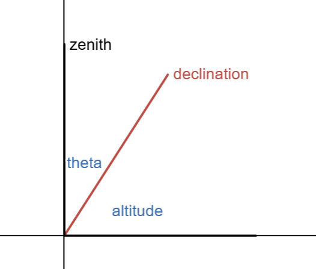

Find the altutude of the Sun along the meridian on the first day of summer and
Answer: The first day of summer is the corresponds to the summer solstice, at which the Sun is at a declination of around 23.5 degrees. Winer observatory is located at a latitude of 31.67 degrees. The following diagram can be made for an observer at Winer.

From this geometry, we can construct the following relationship between the zenith \(z\), declination \(\delta\), and altitude \(A\)
\[A = 90 - z + \delta\]
Using this equation, we can plug in the zenith/latitude of Winer and the declination of the Sun at the summer solstice to find the altitude of the Sun at Winer on the summer solstice.
the maximum altidue of the sun on the first day of winter.
Answer: Using the equation above, we can plug in the declination of the Sun on the winter solstice (-23.5 degrees) to solve for the altitude from Winer.
How do you expect these altitudes to change for an observer at Macalester?
Answer: Macalester is at a higher latitude, so we would expect the respective altitudes to be lower. Using the nifty equation we found early, we can find how much lower exactly.
For some target at Winer, the altitude is
\[A_w = 90 - z_w + \delta \]
For the same target at Mac, the altitude is
\[A_m = 90 - z_m + \delta\]
Thus, the difference between altitudes at Mac and Winer is
\[A_m - A_w = z_w - z_m = 31.67 - 45 = -13.33\]
and
\[\boxed{A_m = A_w - 13.33}\]
So the altitudes at Mac are 13.33 degrees lower than the altitudes at Winer.
Problem 2
Congratulations! You’ve been awarded 4 hours of observing time on the Subaru Telescope on Manua Kea on March 18 (yay, spring break trip to Hawaii!).
What is the Subaru telescope? What portions of the electromagnetic spectrum will you observe in?
Answer: The Subaru telescope is an 8.2 meter optical and near infrared telescope located near the summit of Maunakea, Hawaii, operated by the National Astronomical Observatory of Japan (NAOJ), National Institutes of Natural Sciences. We could abserve in visible and near infrared portions of the electromagnetic spectrum.
Of the following objects, which will you be able to observe if your time starts at 10:00 PM? NGC 13, NGC 2213, NGC 3019, NGC 4214, NGC 5808, NGC 6680, NGC 7111. You may find the NASA/IPAC Extragalactic Database (aka NED, https://ned.ipac.caltech.edu/) helpful.
Answer: Below is a table of target names and coordinates.
Target list
name
\(\alpha\) [deg]
\(\delta\) [deg]
NGC 13
2.1987
33.4333
NGC 2213
92.6753
-71.5286
NGC 3019
147.5299
12.7461
NGC 4214
183.9132
36.3269
NGC 5808
223.5115
73.1317
NGC 6680
279.9332
22.3165
NGC 7111
325.4739
-6.7088
March 18th is nearly the vernal equinox, which means the Sun will have a right ascension around 0 deg. Thus, we can consider the bad range of \(\alpha\) values to be 270-90 deg and the good range of \(\alpha\) values to be 90-270 deg. This allows us to get rid of NGC 13, NGC 6680, and NGC 7111 due to their \(\alpha\) values near the Sun.
We can also get rid of NGC 2213, as it has a declination of -71 degrees, which is unobservable from the Subaru telescope given its latitude of 19.8255 degrees North (19.8255 - 90 = -70 = minimum declination for possible observation).
Revised target list
name
\(\alpha\) [deg]
\(\delta\) [deg]
NGC 3019
147.5299
12.7461
NGC 4214
183.9132
36.3269
NGC 5808
223.5115
73.1317
Since we are near the vernal equinox, at noon we expect the Sun to be directly overhead, making the LST around 0 hours. At midnight, we expect the LST to be around 12. Thus two hours earlier, when our observation block starts, we expect to have an LST of around 10. We know the following relation.
\[HA = LST - \alpha\]
If we convert our \(\alpha\)’s to hours from degrees, we can solve for the hour angles of each target to determine if we can see them in our observing block.
In other words, at 10 pm local time at the Subaru Telescope, NGC 3019 will be almost directly overhead; two hours later, NGC 4214 will be transiting; and at the end of our session, NGC 5808 will be rising/an hour away from transiting.
Problem 3
Use Simbad (https://simbad.cds.unistra.fr/simbad/) to look up the parallax and J2000 coordinates to the three brightest stars in the constellation Orion’s belt: Alnilam, Alnitak, and Mintaka.
What can you learn about the motion of these stars on Simbad
Answer: Alnilam is moving at 1.44 and -0.78 milliarcseconds/year in right ascension and declination, respectively, and away from us at 27.30 km/s. Alnitak is moving at 3.19 and 2.03 milliarcseconds/year in right ascension and declination, respectively, and away from us at 18.50 km/s. Mintaka is moving at 0.65 and -0.69 milliarcseconds/year in right ascension and declination, respectively, and away from us at 18.50 km/s.
What are the distances to the stars in parsecs?
Answer: According to Simbad, the parallax of these stars is the following
name
parallax [mas]
Alnilam
1.65
Alnitak
4.43
Mintaka
4.71
Using the relation between parallax \(p\) and distance \(d\),
\[d_{pc} = \frac{1}{p_{arcsec}}\]
we can find the disances for each star to be the following.
name
parallax [mas]
distances [pc]
Alnilam
1.65
606
Alnitak
4.43
226
Mintaka
4.71
212
For the two stars with the most similar distances, calculate their angular separation and minimum physical separation (assuming they are both at a distance equal to that of the nearest of the two stars).
Answer: Angular separation between two points on the celestial sphere is defined by \[(\Delta \theta)^2 = (\Delta\alpha\cos\delta)^2 + (\Delta\delta)^2\]
The physical separation can be found by the small angle formula, namely
\[\theta_{rad} = \frac{D}{d}\]
The following code chuck solves for the angular and physical separation given the coordinates of the two stars and the distance to the closest star.
import numpy as npimport astropy.units as ualnitak = (085.18969443* u.deg,-01.94257359* u.deg)mintaka = (083.00166706* u.deg,-00.29909511* u.deg)mintaka_parallax =4.71* u.arcsec *10**-3ara, adec = alnitakmra, mdec = mintakadra = ara - mraddec = adec - mdectheta = np.sqrt((dra * np.cos(adec))**2+ ddec**2).to(u.rad)distance = mintaka_parallax.to(u.parsec, equivalencies=u.parallax())separation = theta * distanceprint(f"""Alnitak and Mintaka are separated by {theta.to(u.deg):.2f}, which corresponds to a physical separation of {separation / u.rad:.2f}""")
Alnitak and Mintaka are separated by 2.74 deg,
which corresponds to a physical separation of 10.14 pc